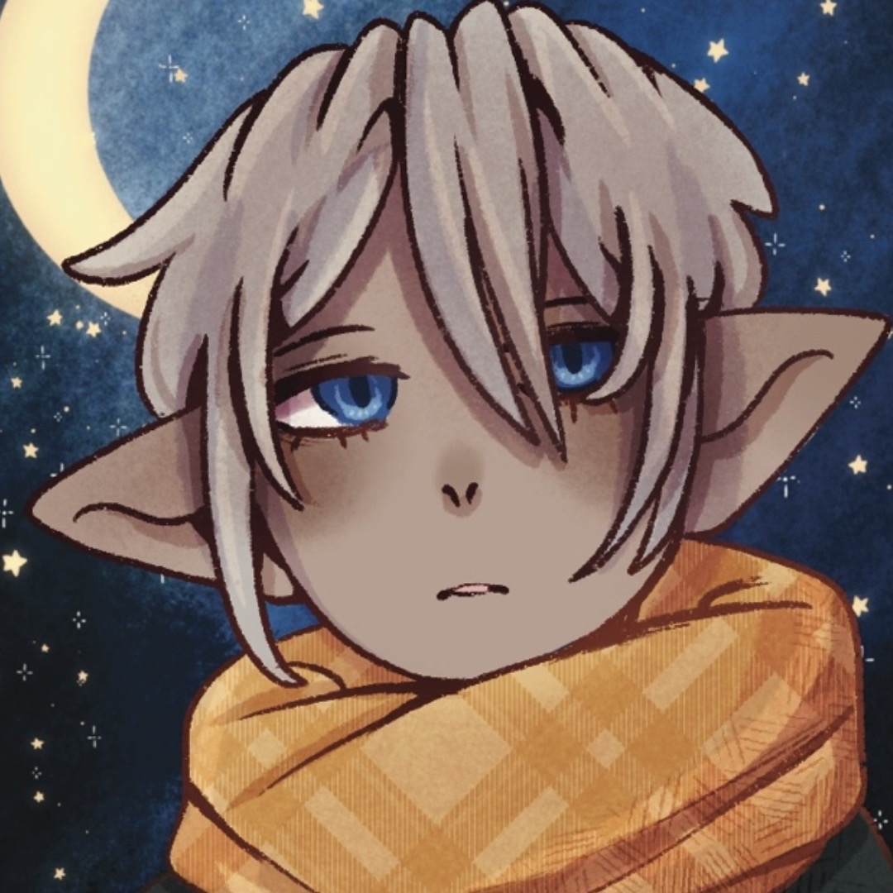

Hazel is the only living relative of Madam Hawthorne and he's a very lonley child.
He once had a large family, but one by one they were killed and eaten by frogglins traumatizing
Hazel.
He spends most his time in the library, well he did, until Noelle came.
Hazel has a scarf that his Mother gave him that he will end up gifting to Ruby once he lets go of
her death.
Hazel is a bit rude, bossy and negative yet thats apart of his charm, him and Noelle are quite the
duo.
Hazel is a hafling of Human and golden, as he's the son of a golden and a human.
Hazel is increadibly intellegent and extremely sharp, it's very difficult to get anything past him.

Hazel ends up Meeting Noelle who becomes his Minder, at first he doesnt seem to enjoy her company but over
time that changes as they get to know eachother better and better, after the Library and Frogglin Bakery
Arc they find themselves closer than ever.
Back to Top